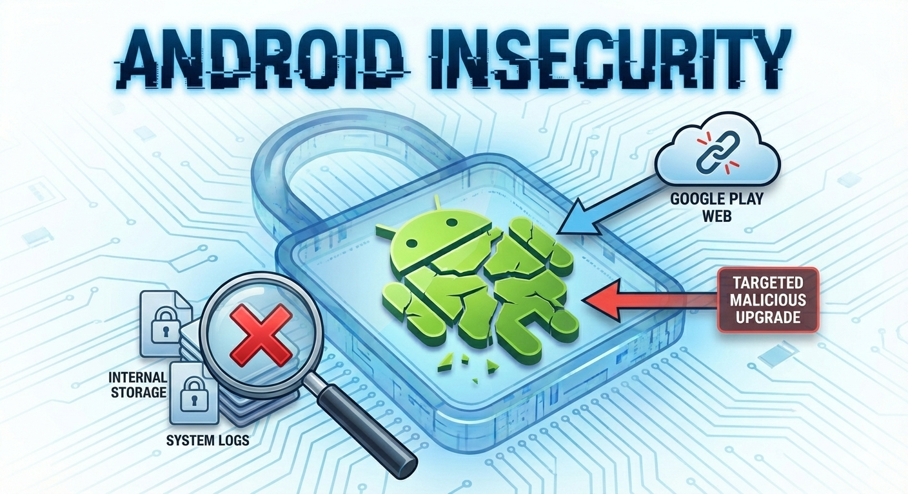

Mobile Operating System ComparisonAdvanced DocumentationIOSPrevious page: Mobile Operating System ComparisonIndex page: Advanced DocumentationNext page: IOSAndroid Insecurity

Many Android phones are designed to block full, independent inspection of the whole device unless you first gain special privileges (for example, root access or an unlocked bootloader). This is insecure because it creates a single point of trust and users cannot independently audit what is installed or what updates are delivered. The sections below explain the practical limitations and why they matter, with technical references for readers who need them.
Introduction
On stock Android, the owner is often forced to trust Google and the device vendor for app delivery and system updates, because the device cannot be fully checked from the outside while it remains locked down. If that control is abused (for example through compromise, coercion, or a malicious insider), targeted malicious installs or updates may be difficult to detect, verify, or prove.
This also matters for ordinary malware investigations. If a phone is infected, you often cannot do a thorough "deep scan" from a clean, separate computer without first unlocking or modifying the device. That step can change the evidence, and a well-designed backdoor could notice the investigation and erase itself or hide all traces.
Perspective
This page uses 'security' from the perspective of end-users, device owner's, security and privacy enthusiasts: the ability to control, inspect, and independently verify the device. It does not focus on DRM or platform control goals.
Independent Verification Limits on Stock Android
What is the problem?
On most stock Android phones, it is difficult to independently verify what is happening on the whole device. If you suspect malware, a hidden backdoor, or tampering, you often cannot check the system from a clean, trusted environment without first modifying the phone. This means you may have to fully trust the vendor-controlled software and services that deliver apps and updates, even though those could be abused in a targeted way.
Why does Android work that way?
Android is commonly shipped as a locked-down general-purpose computer where vendors purposely withhold administrative capabilities ("root rights") from users (administrative rights refusal) and use locked bootloaders (restricted boot).
Many protections and checks are implemented under vendor control, which limits what the owner can change, inspect, or replace. As a result, the device owner is often prevented from independently inspecting the whole system and creating complete device backups without first breaking or bypassing these restrictions.
What does this prevent you from doing?
These restrictions mainly affect three practical goals: inspecting the device deeply for malware/backdoors, proving the result to a skeptical third party, and creating complete device backups suitable for independent verification.
How Android Hinders Malware Analysis
Terminology: In this page, stock Android means a typical phone as sold, with a locked bootloader and without root access. Root means administrator access. A clean, trusted environment means a separate computer or booted system you control, rather than relying on the phone's currently running operating system (OS).
Malware: On most stock (non-rooted) Android phones, you cannot practically inspect the whole device from a clean, trusted environment. Many system areas, logs, and other apps' files are intentionally blocked. This makes it harder to confirm whether suspicious behavior is caused by malware or by normal system components, and harder to convincingly rule out targeted tampering.
For this reason, stock Android is usually not Deep Scan Ready; it is Deep Scan Restricted. This is primarily due to Limitations of Internal Storage Access on Non-Rooted Android Devices.
A simpler, alternative write-up: The Perfect Malicious Backdoor
How Android Hinders Backdoor Analysis
Backdoors (Malicious Backdoors): For the same reasons as malware analysis, it can be difficult to prove whether a hidden backdoor exists. If you cannot fully inspect system files, logs, and low-level components without modifying the device first, you are forced to rely on what the running OS chooses to show you, which is exactly the situation a well-hidden backdoor would want.
How Android Prevents Full Device Backups
Full Device Backup Prevention: On stock (non-rooted) devices, "full backup" usually means a partial backup controlled by the OS and individual apps. A complete device backup for independent verification (for example, a full offline image of relevant partitions) generally requires privileges that stock devices intentionally restrict. This is also due to Limitations of Internal Storage Access on Non-Rooted Android Devices.
Vulnerability to Target Malicious Upgrades
Most Google Android phones are exposed to the risk of targeted malicious app installs, upgrades and system upgrades, because key parts of the app and update delivery process are controlled by centralized providers.
Most Android phones have a feature which allows logging in on the
Google Play web/desktop version using the same e-mail address that is
used on the phone, usually the same Gmail address. When clicking
"Install" for an app using the Google Play web/desktop version, the user
will be prompted (in case of having registered multiple devices) to
choose which device the app should be installed on. After pressing
"Install," the app will be installed on the phone. This
video
 demonstrates this. This is a documented feature, but it also shows that
Google Play can initiate an app installation to a specific linked
device.
demonstrates this. This is a documented feature, but it also shows that
Google Play can initiate an app installation to a specific linked
device.
The concern is not that random outsiders can do this without access. The concern is that control of the delivery system itself is powerful. If Google Play is compromised or if a privileged insider is malicious/coerced, this capability could be abused to push a malicious version (a backdoored version) of an app to a specific target. Likewise, phone vendors control firmware and system updates, so targeted malicious system upgrades are also possible if that control is abused.
Even if network traffic is routed through Tor, logging into a Google account still identifies the account to Google. Tor can hide your IP address, but it does not remove the fact that you are using a specific Google account.
Limitations of Internal Storage Access on Non-Rooted Android Devices
On most Android phones, accessing the internal storage for purposes such as data recovery or malware/rootkit analysis is not reasonably easy.
In short, if you suspect a compromise, do not rely on the phone itself to "check itself". Ideally, you would inspect the data from a separate, known-clean computer. These are the Basics of Malware Analysis and Backdoor Hunting.
This is largely due to how phones are built and how Android permissions work. Internal storage is usually a soldered chip (hard to remove), and Android normally blocks access to many system and other app files unless the device is rooted/unlocked.
Using another device to read the storage is generally not practical for everyday verification, and it is often unsuitable in forensic contexts. If the phone is damaged or unbootable, the storage is also unlikely to work reliably in a different device. Even when specialized extraction is possible (for example, chip-level work), it requires equipment and expertise most users do not have.
These limitations are compounded if the device uses full disk encryption, as explained in Limitations on Encryption Key Backups.
References:
So for most users, this is not reasonably easy on stock (non-rooted) devices.
Quote from How to fully backup non-rooted devices?:
For 4.0+ devices there is a solution called "adb backup".
Note: This only works for apps that do not disallow backup! Apps that disallow backup are simply ignored when creating a backup using this way.
Information from Copy full disk image from Android to computer does not work for non-rooted / non-rootable devices.
Attestation and the Circular Trust Problem
Android relies heavily on Device Attestation (SafetyNet):
Attestation claim |
Meaning (simplified) |
|---|---|
Running vendor-approved software |
The device reports it is running an OS/build approved by the vendor (and often Google). |
Unmodified |
The device reports it has not been altered (for example, no bootloader unlock or system modifications). |
Locked down |
The device reports security-relevant settings remain enforced (locked boot chain, expected integrity state). |
This creates a circular trust dependency:
Goal |
What is typically required |
Consequence |
|---|---|---|
Inspect the system deeply |
Modify the device (for example, unlock bootloader, gain root, use special builds) |
Device may fail attestation and be treated as untrusted by apps |
Remain trusted by apps |
Keep the device unmodified and locked down |
Limits access to the disk, memory, logs, and low-level components needed for independent verification |
From the platform's point of view, this is a security feature. From a high-threat perspective, it is a verification dead-end.
Evidence and technical appendix The following sections provide deeper technical evidence, extended quotations, and platform comparisons for readers who need a higher assurance level or who want to audit the claims above.
Android Hinders Detection of Low-level Rootkits
Low-level rootkits can hide by manipulating the OS itself, which means security tools running on the same phone may be unable to reliably detect them. Trusted detection can require obtaining a trusted snapshot of memory from outside the monitored OS. [1]
Note: Underline added.
Abstract -- Smartphones and tablets have become prime targets for malware, due to the valuable private and corporate information they hold. While Anti-Virus (AV) program may successfully detect malicious applications (apps), they remain ineffective against low-level rootkits that evade detection mechanisms by masking their own presence.JoKER: Trusted Detection of Kernel Rootkits in Android Devices via JTAG Interface
For more evidence and technical background, please press "Learn More" on the right side.
The JoKER paper explains why on-device detection is difficult when the monitored OS may be compromised:
Furthermore, any detection mechanism run on the same physical device as the monitored OS can be compromised via application, kernel or boot-loader vulnerabilities.
Consequentially, trusted detection of kernel rootkits in mobile devices is a challenging task in practice.
The paper also provides background on what kernel rootkits are and why they are difficult to detect from inside the OS:
A. Kernel Rootkits
Mobile and desktop malware can operate in user space or kernel space. The user space malware can modify and inject code only into the memory areas allocated to apps and user processes. The kernel space malware can manipulate objects that reside in the entire memory area of the OS. Although sophisticated Mandatory Access Control (MAC) mechanisms such as SElinux [4] are integrated into current versions of Android, malware developers still manage to run their code in the kernel [5] [6] [3]. Rootkits are kernel space malware that use illicitly granted exclusive permissions to hide the malware's existence from detection systems, by manipulating the kernel's internal data structures [7]. A malicious code that has penetrated into the memory of the kernel can neutralize any security tool running in the OS. For instance, if an process sends a request to the kernel asking for the list of files in a specific directory there is no guarantee for the integrity of the returned list. Consequently, in order to detect presence rootkits, a trusted snapshot of the kernel memory has to be obtained [8]
The JoKER paper then proposes obtaining a trusted snapshot using JTAG (a hardware debugging interface), rather than relying on the potentially compromised OS.
Proposed solution (JoKER) and how it works (JTAG details)
Proposed System
In this paper we present JoKER (JTAG observe Kernel), a system that utilizes the JTAG hardware interface of the mobile device in order to obtain trusted snapshot of the device memory for detection of kernel rootkits.
The paper continues to describe features useful for rootkit analysis:
Our detection system uses two important debugging features of JTAG:
1. The ability to halt the system instantly by sending special instruction to the main processor.
2. The ability to access the content of the device's volatile memory (RAM) while it is being halted. The overall system does not run on the mobile device and therefore can securely read the kernel's memory areas in a trusted manner.
Once the kernel memory is extracted, it is passed through an array of programmed scripts. Each script reconstructs specific data-structures in the kernel and analyzes them for traces of suspicious modifications.
However, memory acquisition capabilities (from outside offers the advantage of trusted memory inspection.
Additional background reading:
For most users and most phones, JTAG-based memory acquisition is not practical.
Why JTAG is usually impractical for typical end users
Some phones have JTAG (a hardware debugging interface), but it is usually not exposed or usable for typical end users. Access tends to be device specific and often requires specialized equipment and skills.
No quantifiable data has been researched/found yet on how many are versus are not.
This is very device specific.
Phone vendors often treat JTAG as a security risk, so it is commonly disabled or locked down on production devices. [2]
Turn Off JTAG by Default
To minimize security risks, JTAG capabilities should be disabled by default in production systems or end-user devices. This precautionary measure reduces the potential attack surface by ensuring that the JTAG interface cannot be exploited unless specifically enabled for essential testing or debugging purposes. For instance, manufacturers can implement a system where JTAG is only activated temporarily during authorized maintenance activities, thereby protecting devices from unauthorized access.ACL Digital: Protect and Validate Essential JTAG Practices for Electronics
However, JTAG can also be used for security analysis.
Could JTAG be used for security analysis?
Yes, JTAG can be utilized for security analysis purposes. By accessing a device's internal state via its JTAG interface, security researchers can scrutinize firmware, identify potential vulnerabilities, and assess the effectiveness of security measures. This analysis may involve examining memory contents, identifying unauthorized access points, and assessing the resilience of cryptographic implementations. JTAG provides valuable insights into a device's security posture, aiding in the development of robust defenses against potential threats and exploits.Lenovo: What is JTAG?
The research paper acknowledges the awkwardness of requiring JTAG access.
C. Method Limitation
Using the JTAG interface requires physic the JTAG port which is placed on the same board. Compared to software-based method may appear rather awkward.
Using JTAG requires physical access to a JTAG port on the device's circuit board, which is why it can be awkward compared to software methods.
On many Android devices, deep investigation (including searching for sophisticated rootkits) often requires root access. If the bootloader cannot be unlocked, researchers may need to rely on vulnerabilities ("exploits") to temporarily gain those privileges.
Android [...]
security mechanisms such as application sandboxing, encryption, and file-based access controls pose challenges to forensic data acquisitionInternational Journal of Forensic Science: Forensic Techniques for Android Devices Using Logical Extraction and Temporary Root Methods, Vinay Chauhan, Neeraj Kumar, et al. Forensic Techniques for Android Devices Using Logical Extraction and Temporary Root Methods. Int Jr of Forensic Sci. 2025; 8(1): 51-55.
Forensic approach example: temporary root methods (details)
Temporary Root Techniques:
Temporary root methods leverage vulnerabilities in the Android operating system to gain temporary elevated privileges. These techniques enable comprehensive data access, including system-level and deleted files, without taking permanent modification on the device. Methods such as ZergRush, Setuid, GingerBreak, and AdbRestore frequently used in this approach. Temporary root is ideal for advanced forensic investigations requiring deeper insights.
For comparison, on non-Android platforms such as Linux for desktop or servers provide suitable options:
- Anti-malware kernel modules: Such as rkchk - Rust Linux Kernel Module designed for LKM rootkit detection [3] or LKRG - Linux Kernel Runtime Guard.
- Boot from external media and perform an integrity check: Tools such as debcheckroot. (For a more detailed description, also Hash Check all Files at Boot.)
Malware Analysis Capabilities: Traditional Linux vs. Android
Traditional Linux
On traditional Linux systems (desktops and servers):
Capability |
What this enables |
|---|---|
Replace the operating system |
Install a known-good OS or reinstall from trusted media if compromise is suspected |
Boot from external media |
Start a clean, trusted environment (for example, live media) without using the potentially compromised system disk |
Inspect disks and memory from a trusted environment |
Analyze filesystems and capture memory while minimizing reliance on the suspected OS |
Instrument or replace the kernel |
Load debugging or integrity tooling, or use a different kernel build for analysis |
Run security tools outside the potentially compromised system |
Perform inspection and verification from an external host or trusted boot environment |
This allows independent verification even if the original OS installation is suspected to be malicious or compromised.
Stock Android Devices
On most stock Android devices:
Constraint |
Practical impact |
|---|---|
The operating system cannot be freely replaced |
If the installed OS is suspected to be compromised, replacing it with a known-good OS is usually not supported or not practical. |
Booting an external, fully trusted OS is not supported |
You generally cannot boot a clean forensic or verification environment that bypasses the installed system. |
Full disk and memory access is blocked without special privileges |
Raw disk imaging, comprehensive file inspection, and live RAM capture are typically unavailable on stock devices. |
Gaining those privileges usually breaks verified boot / attestation |
Unlocking or modifying the device often causes it to no longer be considered "trusted" by attestation mechanisms. (See also Device Attestation such as SafetyNet.) |
Gaining those privileges can disable or degrade security features |
Some security properties rely on the device remaining locked down and unmodified. |
Gaining those privileges can cause many apps to stop functioning |
Banking, work, and DRM applications may refuse to run if the device is modified or fails attestation checks. |
As a result, the tools needed to verify the system require breaking the system's trust guarantees first.
Traditional Linux versus Android
On stock Android, many techniques needed to independently check the whole device for hidden malware or backdoors are unavailable.
Aspect |
Traditional Linux |
Android |
|---|---|---|
System Access (Researcher-Controlled) |
✅ Full root access common in testbeds and forensic imaging |
❌ Root typically restricted; requires OEM unlock (often unavailable) or exploit to gain privileged (root) access |
User-controlled Root |
✅ Commonly available in lab/test environments and on self-managed systems |
❌ Not available on stock devices; typically requires bootloader unlock, custom builds, or an exploit |
Raw Disk Imaging |
✅ Easy via |
❌ Not feasible on stock devices; generally requires root, an unlocked bootloader, or specialized vendor/forensic access |
Live Memory Acquisition |
✅ Readily possible via tools like |
❌ Not feasible without root; no official RAM acquisition APIs |
Kernel Analysis |
✅ Kernel modules can be inserted, traced, or extracted; symbols often available |
❌ Not on stock devices (without root / special builds / vendor support). |
Kernel Integrity Verification |
✅ Possible using external boot media and host-controlled integrity tooling |
❌ Not on stock devices in a user-controlled way; verification is typically limited and vendor-controlled |
Independent OS Attestation |
✅ Possible by booting a trusted environment and performing independent integrity checks |
❌ Limited on stock devices; attestation and integrity guarantees are typically vendor-controlled |
Binary Reverse Engineering |
✅ Straightforward access to malware files, system binaries, logs |
⚠️ Possible, but often limited to app-level APKs unless rooted or firmware access is available |
Hook & Injection Analysis |
✅ LD_PRELOAD, ptrace, syscall interposition techniques easily traced |
⚠️ Requires rooting; SELinux and sandboxing block injection methods by default |
Dynamic Instrumentation |
✅ Tools like |
⚠️ Requires root or debugging permissions |
Filesystem Analysis |
✅ Full access to logs, temp files, malware droppers, rootkits |
⚠️ App sandbox limits access to other app data; root or forensic image required for full view |
Network Monitoring & C2 Analysis |
✅ Tools like |
⚠️ Requires root or VPN-based monitoring |
External Monitoring |
✅ Broad options, including out-of-band approaches and host-controlled capture/analysis |
❌ Limited on stock devices; out-of-band monitoring is generally not available without elevated access or specialized tooling |
External Monitoring |
✅ Broad options, including out-of-band approaches and host-controlled capture/analysis |
❌ Limited on stock devices; out-of-band monitoring is generally not available without elevated access or specialized tooling |
Log-based forensics |
✅ Yes. |
⚠️ Limited. [4] |
Limitations on Encryption Key Backups
It is not reasonably easy to make a backup of encryption keys.
The main disk-encryption key is typically protected by hardware security (for example, a secure chip/TEE). Android documentation describes it as being stored in hardware. That makes it much harder to copy or back up than ordinary files.
Note: "masterkey" here does not mean "backdoor". This is normal for
most Linux desktop distributions offering full disk encryption. The
masterkey is stored somewhere. When entering the password at boot with
Linux desktop full disk encryption enabled, what gets decrypted is not
actually the disk but the masterkey. This is then used to decrypt the
disk, which is also called luks header. The advantage of the masterkey
is that changing the disk encryption password is possible without having
to re-encrypt the whole disk. (cryptsetup-reencrypt).
It may be possible on some devices if the phone still boots and you can gain root, but for most users it is not straightforward.
Objections
Mobile Verification Toolkit (MVT) Project
Mobile Verification Toolkit (MVT) is a powerful consensual forensic tool designed to help analyze mobile devices for signs of spyware.
A potential objection is that MVT provides evidence to the contrary, suggesting that malware can be detected even on Android.
However, there is no contradiction. MVT can help identify known signs of compromise using the data the device exposes, but stock mobile OS designs limit that observability. The following verbatim quotes from MVT and Amnesty International reinforce that Android and iOS provide limited diagnostic traces. As a result, investigators often have to cope by working with partial data and known Indicators of Compromise (IoCs), and a lack of findings is not definitive proof that a device was not compromised.
Note: Underline added. Bold added.
Methodology for Android forensic
Unfortunately Android devices provide much less observability than their iOS cousins. Android stores very little diagnostic information useful to triage potential compromises, and because of this mvt-android capabilities are limited as well.
However, not all is lost.Mobile Verification Toolkit: Methodology for Android forensic
10. Mobile devices, security and auditability
Much of the targeting outlined in this report involves Pegasus attacks targeting iOS devices. It is important to note that this does not necessarily reflect the relative security of iOS devices compared to Android devices, or other operating systems and phone manufacturers.
In Amnesty International's experience there are significantly more forensic traces accessible to investigators on Apple iOS devices than on stock Android devices, therefore our methodology is focused on the former. As a result, most recent cases of confirmed Pegasus infections have involved iPhones.
This and all previous investigations demonstrate how attacks against mobile devices are a significant threat to civil society globally. The difficulty to not only prevent, but posthumously detect attacks is the result of an unsustainable asymmetry between the capabilities readily available to attackers and the inadequate protections that individuals at risk enjoy.
While iOS devices provide at least some useful diagnostics, historical records are scarce and easily tampered with. Other devices provide little to no help conducting consensual forensics analysis. Although much can be done to improve the security posture of mobile devices and mitigate the risks of attacks such as those documented in this report, even more could be achieved by improving the ability for device owners and technical experts to perform regular checks of the system's integrity.
Therefore, Amnesty International strongly encourages device vendors to explore options to make their devices more auditable, without of course sacrificing any security and privacy protections already in place. Platform developers and phone manufacturers should regularly engage in conversations with civil society to better understand the challenges faced by HRDs, who are often under-represented in cybersecurity debates.Amnesty International's security labs: Forensic Methodology Report: How to catch NSO Group's Pegasus
Resources
Bootloader lock. A locked bootloader prevents the loading and execution of any code other than that signed by the device manufacturer. In order to flash (or boot into) a custom image such as a custom recovery with the ability to access and image the data partition, one must first unlock the bootloader. This, in turn, would immediately destroy the cryptographic keys used to encrypt the data partition, and wipe the data, making official bootloader unlock a bad strategy for the purpose of physical acquisition.Elcomsoft: iOS vs. Android physical data extraction and data protection compared
Additional Android Security Issues
This wiki page is not standalone. It should be read together with the following wiki pages:
Footnotes
- JoKER: Trusted Detection of Kernel Rootkits in Android Devices via JTAG Interface, Mordechai Guri, Yuri Poliak, Department of Information Systems Engineering, Ben-Gurion University, Beer-Sheva, Israel
- * Device having secure JTAG and debugging method for the same * ACL Digital: JTAG technology security guide * Startup Defense: JTAG injection * Cellebrite glossary: JTAG extraction
- rkchk blog post: Linux kernel Rust module for rootkit detection
Managing expectations: When reviewing a device, you may find no traces of known threats. While this is a positive signal, it doesn't definitively mean the device hasn't been compromised. Even after thorough manual analysis, various factors may limit the effectiveness of log-based forensics. If there are strong suspicions of compromise (for example, a threat notification from a platform), it is advisable to consider combining log-based methods with other forensic techniques mentioned earlier.Documentation repository on consensual digital forensics for the defense of Human Rights: Explainer: Introduction to log-based forensics on Android devices